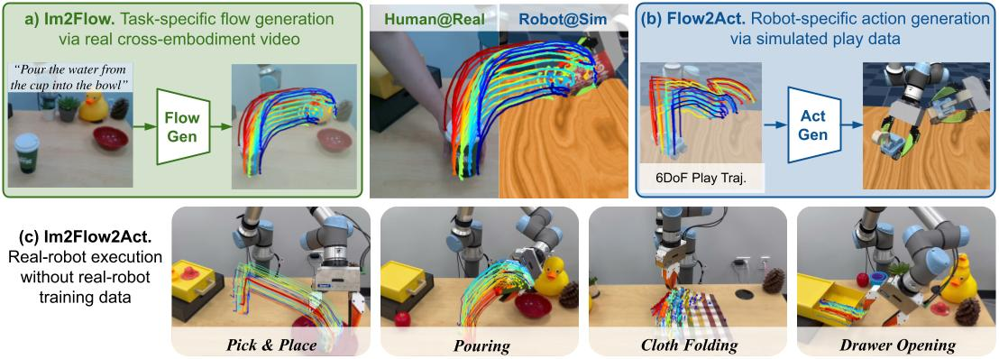
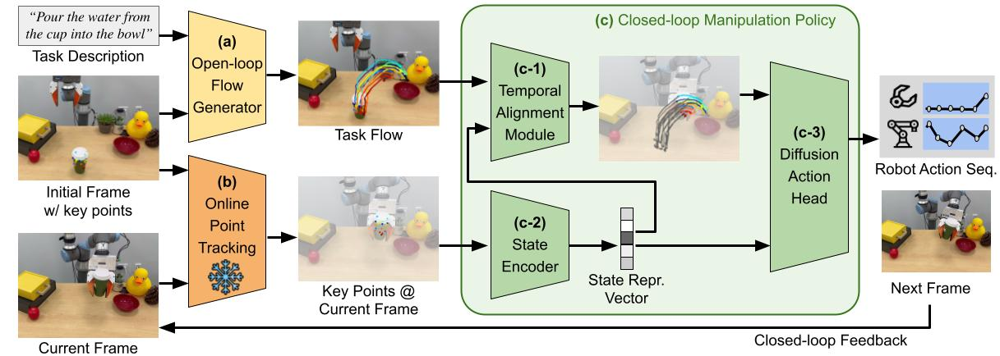

In Im2Flow2Act, we utilize object flow to bridge the domain gap between both embodiments (human v.s.
robot)
and training environments (real v.s. simulation).
Our final system is able to leverage both a)
action-less human video for task-conditioned flow generation and b)
task-less simulated robot data for flow conditioned action generation, resulting in c) a
language-conditioned multi-task system for a wide variety of real-world manipulation tasks.
Our key idea is to use object flow—the exclusive motion of the manipulated object,
excluding any background or embodiment movement—as a unifying interface to connect
cross-embodiments (i.e., human and robot) and cross-environments (i.e., real-world and
simulated),
achieving one-shot generalization for new skills in the real world.

To utilize object flow as a unifying interface for learning from diverse data sources, we design our
system into two components:
- Flow generation network: The goal of the flow generation network is to learn
high-level task planning through cross-embodiment videos, including those of different types of robots
and human demonstrations.
We develop a language-conditioned flow generation network built on top of the video generation model
Animatediff.
This high-level planning component generates the task flow based on initial visual observation and task
description.
- Flow-conditioned policy: The goal of the flow-conditioned imitation learning policy
is to achieve the flows generated by the flow generation network, focusing on low-level execution.
The policy learns entirely from simulated data to build the mapping between actions and flows.
Unlike most sim-to-real work that requires building task-specific simulation, our policy learns entirely
from play data, which is easier to collect.
Since flow represents motion, a common concept across both real-world and simulated environments, our
policy can be seamlessly deployed in real-world settings.